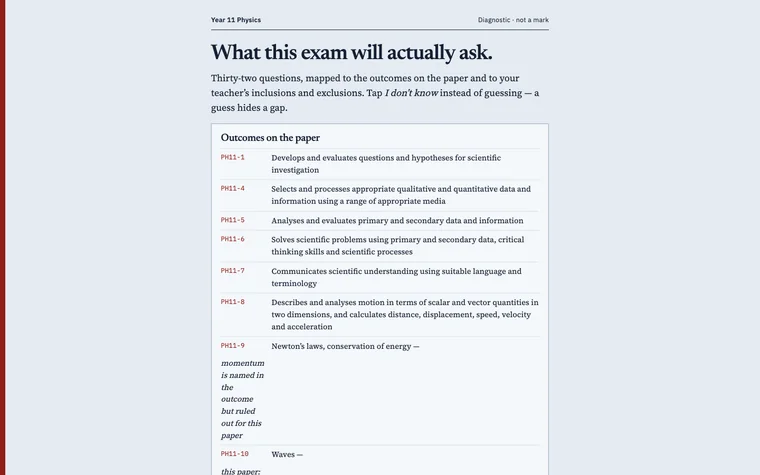

← All projects
Physics gap check
A Year 11 Physics check that shows exactly which syllabus outcomes a student hasn't mastered yet.
Designed and built independently, outside my school roles. Demonstrations use made-up data and sample AI responses.


The classroom problem
On a multiple-choice test, a lucky guess hides a gap. This check asks students to tap "I don't know" instead of guessing, so the gaps show.
What it does
- Questions are mapped to the syllabus outcomes the exam will assess.
- Students choose "I don't know" rather than guess.
- A gap report shows which outcomes need work.
- A written paper is marked without revealing the solutions.
Where AI fits
AI marks the written paper and gives feedback without giving away the answers. In the demonstration version this feedback is pre-written.
The teacher’s role: Use the syllabus-linked gap report to decide which outcomes to revisit.